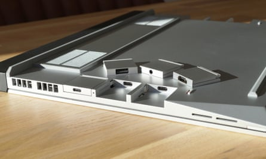
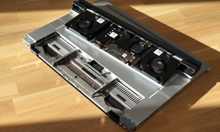
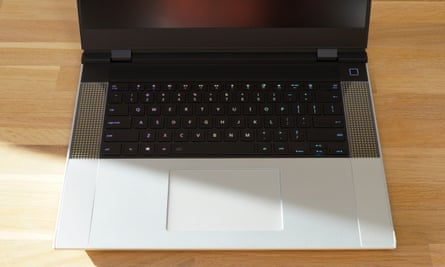
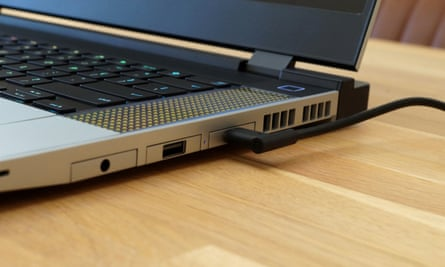
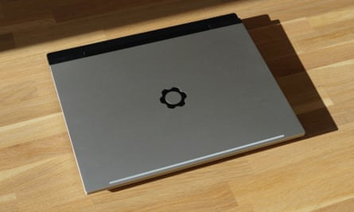
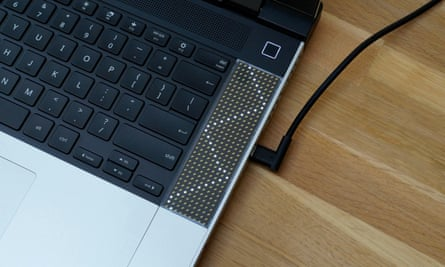

F ramework is back with the new, larger and more powerful Laptop 16 that is its most ambitious device yet: a highly modular and upgradeable 16in machine that can transform in layout and power in minutes. It is quite unlike anything else on the market.
Packed with hot-swappable components, the laptop can be customised in myriad ways, converting from a fast but quiet workhorse by day into an LED-strewn gaming PC by night.
Costing from £1,399 (€1,579/$1,399/A$2,319), the 16in machine further improves on the ideas that made its smaller sibling the Laptop 13 such a hit. Practically everything in the laptop can be taken apart and replaced with varying degrees of ease.
The expansion cards slot into the side of the laptop with a click to instantly add USB-C, USB-A, HDMI, DP, Ethernet, microSD slot, expandable storage or a headphones jack.Photograph: Samuel Gibbs/The Guardian
It has the same brilliant port expansion system as its sibling, allowing you to click into place up to six little cards to provide any combination of ports, card readers or expandable storage in the sides of the machine. Most cards cost less than £20 so they are cheap enough you can keep a collection of them for different tasks, sliding them in and out as needed.
In addition, the keyboard, number pad, trackpad and LED modules and spacers simply snap into place via magnets on the top deck. Without tools you can position the trackpad or keyboard on the left, right or centrally, add a separate number or macro pad either side, or simply swap out the keyboard entirely for another language or layout in seconds, even while the laptop is running.
Diving inside, the Framework’s components including the memory, storage and wireless cards can be removed with a single screwdriver. You can expand the storage or RAM yourself or even upgrade bits, unlike many other laptops where the parts are soldered in place.
The AMD Radeon RX 7700S graphics card module simply slots in the back of the machine to instantly add more power to the laptop.Photograph: Samuel Gibbs/The Guardian
But the Framework’s pièce de résistance is the big expansion module that hangs out the back behind the screen. It allows much more powerful upgrades such as a module containing an AMD Radeon RX 7700S discrete graphics card.
Once the machine is turned off, these modules simply slide in and out, held in place by a couple of screws under the keyboard, taking just a few minutes to add significantly more power or reducing the size and weight of the laptop as required.
For now there is a choice of only two modules, the AMD graphics card or a default smaller one with just fans for cooling. But Framework has opened up the system to third-party developers to build alternative expansion modules beyond just graphics cards and intends to offer graphics upgrades further down the line, similar to its processor upgrades it sells for the Laptop 13.
In use
They keyboard comes in various languages and backlight colours, pictured with the US English full RGB option with two matrix LED spacers either side.Photograph: Samuel Gibbs/The Guardian
The Framework is actually good to use too. The backlit chiclet-style keyboard has a satisfying 1.5mm of key travel and held up well to writing at speed. Its frame flexes more than a regular laptop, but it was not mushy in operation. The trackpad is big, smooth and precise. The screen is a nice-looking LCD with a QHD resolution and 165Hz refresh rate, but it lacks any HDR support and certainly isn’t as good as the miniLED or OLED screens you might get on high-end rivals.
The speakers are serviceable, being loud enough for general use, but they pale in comparison with the best you get from Apple, Dell or Razer. The fingerprint sensor in the power button is excellent. The 1080p webcam and mics are solid for video calls, and have switches at the top of the screen to disable them for added privacy.
Specifications
- Screen: 16in LCD 2,560x1,600 (189PPI; 165Hz)
- Processor: AMD Ryzen 7 (7840HS) or 9 (7940HS)
- Ram: 16, 32 or up to 64GB
- Storage: 250GB to 4TB-plus
- Graphics: AMD Radeon 780M or RX 7700S (8GB)
- Operating system: Windows 11
- Camera: 1080P
- Connectivity: Wifi 6E, Bluetooth 5.2, 6x hot-swappable ports, fingerprint reader
- Dimensions: 356.6 x 270 x 18mm or 356.6 x 290.2 x 21mm
- Weight: 2.1 or 2.4kg
Serious power, but only when plugged in
Framework’s compact 180W USB-C power adapter is one of the first available and is needed to get full performance from the Laptop 16.Photograph: Samuel Gibbs/The Guardian
The Laptop 16 is available with a choice of AMD Ryzen 7 or 9 series chips, both of which come with Radeon 780M integrated graphics, which is a pretty potent combination without adding the discrete graphics card module. Framework sells the machine in pre-built configurations with plenty of storage options and 16 or 32GB of RAM, but it can take up to 64GB if you’re adding your own.
As tested running Windows 11, the “overkill” prebuilt model with the Ryzen 9 (7940HS) chip, 32GB of RAM and 1TB of storage the Laptop 16 performs very well indeed, with or without the RX 7700S expansion module installed. It manages to remain cool and essentially silent while doing office work such as word processing, browsing, editing photos or taking video calls. When high-end gaming the fans can get very loud indeed, which is to be expected, but does mean headphones will be required to hear what’s happening.
In terms of raw performance, the Ryzen 9 chip is right up there with the very fastest machines and has some of the best integrated graphics available. The RX 7700S is powerful enough to support high graphics settings in most games at 1080p resolution, but struggles with ray tracing or maintaining more than double-figure frames per second performance. It therefore only manages to keep pace with its rival Nvidia’s more affordable chips. The AMD card is certainly fast enough for creative work such as editing photos or video, but if gaming is the priority you can get much bigger bang for your buck with rivals.
The big caveat is that the highest performance is only available when plugged in, taking up to a 70% performance decrease on battery depending on which metric you measure. That’s the same case as other PCs, but not Apple’s latest Mac laptops.
The battery life is fairly short compared with the best 16in laptops, but roughly in line with most gaming PCs managing under three hours of gaming, about six hours of office work with the graphics module installed or closer to eight hours without it.
Sustainability
The Laptop 16 is well built but has a little more flex in some places such as the lid and deck compared to premium rivals.Photograph: Samuel Gibbs/The Guardian
Framework rates the battery to maintain at least 80% of its original capacity for at least 1,000 full charge cycles. It can easily be replaced along with all the rest of the components , including the RAM and SSD. The laptop was awarded 10 out of 10 for repairability by the specialists iFixit.
Framework sells replacement parts and upgrades through its marketplace, but also supports third-party parts. The laptop contains recycled aluminium, magnesium and plastic in most components.
Price
DIY editions of the Framework Laptop 16 start at £1,399 (€1,579/ $1,399 / A$2,319 ) without RAM, storage, ports or software. Pre-built models start at £1,699 (€1,919/ $1,699 / A$2,819 ). The optional AMD Radeon RX7700S graphics expansion bay module costs £400 (€450/$400/A$660).
For comparison, the Laptop 13 costs from £1,049 , the Microsoft Surface Laptop Studio 2 starts at £2,069 , the Dell XPS 15 starts at £1,499 , the Razer Blade 16 starts at £2,700 and the Apple 16in MacBook Pro starts at £2,599 .
Verdict
The Framework Laptop 16 is the holy grail of upgradeable, modular, large-screen notebook PCs. It offers unrivalled flexibility and is a tinkerer’s dream.
The basic design is solid. It is not too thick or heavy for this size of machine. The screen is pretty good, the speakers are usable and the trackpad and keyboard modules are good. The fact that you can swap around the ports, keyboard, trackpad and other modules in seconds with no technical knowledge is marvellous, while the big expansion slot at the back offers real potential.
The performance of the basic laptop is also excellent, but for now the available AMD Radeon RX 7700S graphics card is a little disappointing. It is not a terrible GPU but it can only match lower-end models, which means the Framework isn’t the best gaming PC. You can certainly get much faster traditional gaming laptops for far less money.
And that’s the biggest problem with the Framework. It costs too much for the power and features it currently offers if you ignore its modular, repairable design. That makes it less of an instant recommendation than its smaller 13in sibling . But the Laptop 16 is still a triumph. It really is like nothing else on the market.
Pros: swappable ports, modular keyboard and trackpad, optional graphics card expansion, repairable and upgradeable, great performance, thoughtful design, good fingerprint scanner, good screen and webcam. Cons: very expensive, available graphics card is low-end for gaming, no touchscreen, no HDR or miniLED/OLED option for screen, relatively short battery life, keyboard and body have more flex than premium rivals.
The optional matrix panels can replace spacers either side of the keyboard, but for now are more for fun than function.Photograph: Samuel Gibbs/The Guardian